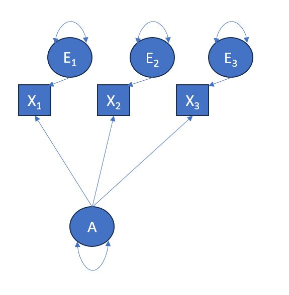
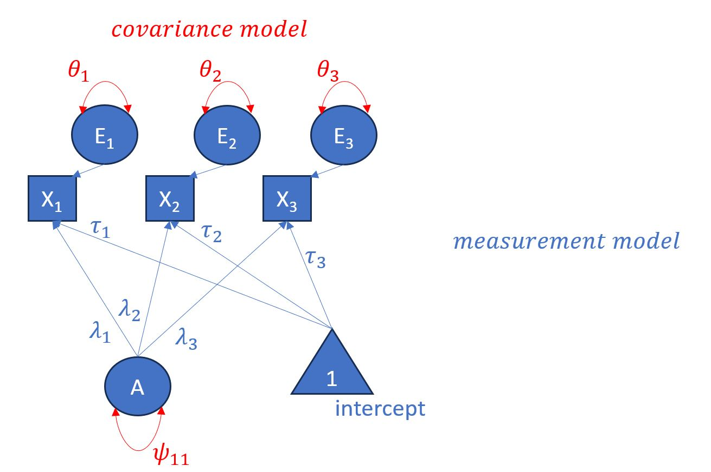
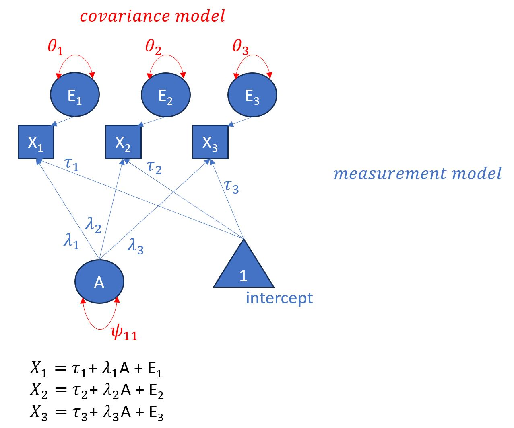

set.seed(3131)
### normally distributed factors
### these are just to help me set the indicators
### the f1 and f2 will not be included in the data.frame
f1 <- rnorm(250)
f2 <- rnorm(250)
### f1 indicators x1 to x3
x1 <- f1 + rnorm(250, sd=0.15)
x2 <- f1 + rnorm(250, sd=0.15)
x3 <- f1 + rnorm(250, sd=0.15)
### f2 indicators x4 to x6
x4 <- f2 + rnorm(250, sd=0.15)
x5 <- f2 + rnorm(250, sd=0.15)
x6 <- f2 + rnorm(250, sd=0.15)
### creating the dataframe
df <- data.frame(x1=x1, x2=x2, x3=x3, x4=x4, x5=x5, x6=x6)Today’s Aims
Today we will go through confirmatory factor analysis using lavaan. Our main focus will be lavaan syntax and the interpretation of output for different models and not going through the detailed mathematics behind the CFA processes. We will get a chance to talk about the mathematics and more during the next weeks of more intermediate and advanced topics.
Today’s examples
We will be working on the same variables that we generated last week during the EFA. We will go through the process of one factor CFA and two factor CFA.
We specifically explored a model with two factors and overall 6 items, today we will first attempt to confirm a model where three items load to latent variable A. This will be our one-factor CFA.
In the second part of our workshop we will attempt to confirm a model with two latent variables A and B.
Terminology
Today we will also be referring back to many of the terms that we have defined in the past.
- Observed variables
- Latent variables
- Directional/regression paths
- Non-directional paths/covariance/variance
- Model parameters
- Exogenous, endogenous variables
- Measurement and structural model
We will expand on terminology today
- Scale: latent variables do not have a measurement scale, instead we have to define one for them. To do that we need to set an origin and a unit
- Origin: we can set the mean to 0
- Unit
- Either set the variance to 1
- Or, use the same unit as that of one of the measured variables ( only 1 item)
Notations in lavaan (refresher)
~predict, used for regression of observed outcome to observed predictors=~indicator, used for latent variable to observed indicators~~covariance1*fixes parameter or loading to 1NA*frees parameter or loading~1intercept or mean (e.g.,x1 ~ 1estimates the mean of variablex1)a*defines the parameter ‘a’,
Number of parameters (refresher)
As mentioned before every path or (co)variance that has not been fixed to a specific value will have to be estimated
- Factor loadings
- Factor covariances
- Factor variances
- Error variances
Last week’s example
Last week we generated random data using the 1212 seed. Today we will carry out CFA on the same model but using 3131 as a seed.
One factor CFA

One factor CFA, expanded

Once factor CFA, expanded (again)

One Factor CFA and degrees of freedom
- df < 0, the model is under-identified
- df = 0, the model is just-identified (also known as saturated), no model fit
- df > 0, over-identified, we can assess model fit
Reminder: df = number of known values - number of parameters to estimate
One Factor CFA and degrees of freedom
Total number of parameters (alson knows as “known values”) as previously discussed
\[ p(p+1)/2 \] \[ 3(4)/2=6 \]
Number of parameters to estimate???? (Let us revisit the slide with the model visualisation)
Identification Methods
- marker method: we fix the first loading of each factor to 1 (what does this mean?)
- variance standardization method: we fix the variance of each factor to 1 and we freely estimate all other loadings (what does this mean?)
- standardization all method, standardizes the variance of each factor to 1 but also standardizes the items
Note: default lavaan method is the marker method
Let us see this example in lavaan
library(lavaan)
model1 <- '
f1 =~ x1 + x2 + x3
'
model1.fit <- cfa(model1, data = df)
summary(model1.fit)lavaan 0.6.17 ended normally after 50 iterations
Estimator ML
Optimization method NLMINB
Number of model parameters 6
Number of observations 250
Model Test User Model:
Test statistic 0.000
Degrees of freedom 0
Parameter Estimates:
Standard errors Standard
Information Expected
Information saturated (h1) model Structured
Latent Variables:
Estimate Std.Err z-value P(>|z|)
f1 =~
x1 1.000
x2 0.992 0.014 72.880 0.000
x3 0.991 0.014 72.206 0.000
Variances:
Estimate Std.Err z-value P(>|z|)
.x1 0.019 0.003 6.471 0.000
.x2 0.023 0.003 7.277 0.000
.x3 0.023 0.003 7.424 0.000
f1 0.912 0.083 10.951 0.000How can we interpret this output?
- x1 estimate is 1.000 and has no std error, z-value, nor p-value. This is because lavaan uses the marker method by default. x1 has been fixed to 1 and is now the scale of our factor 1.
- x2 estimate is 0.992. For an increase of 1 unit in f1, x2 increases by 0.992. The 1 unit in f1 is the unit of x1 as this was set to be the scale
- .x1 refers to residual variances, hence the . in front of x1
- f estimate of 0.912 is the variance of our latent variable (factor)
- p-values are just telling us if our estimates are significantly greater than zero
But what about intercept???
Adding intercept in lavaan
library(lavaan)
model1.inter <- '
f1 =~ x1 + x2 + x3
f1 ~ 1
'
model1.inter.fit <- cfa(model1.inter, data = df)
summary(model1.inter.fit)lavaan 0.6.17 ended normally after 50 iterations
Estimator ML
Optimization method NLMINB
Number of model parameters 10
Number of observations 250
Model Test User Model:
Test statistic NA
Degrees of freedom -1
P-value (Unknown) NA
Parameter Estimates:
Standard errors Standard
Information Expected
Information saturated (h1) model Structured
Latent Variables:
Estimate Std.Err z-value P(>|z|)
f1 =~
x1 1.000
x2 0.992 NA
x3 0.991 NA
Intercepts:
Estimate Std.Err z-value P(>|z|)
f1 0.000 NA
.x1 0.009 NA
.x2 0.036 NA
.x3 0.014 NA
Variances:
Estimate Std.Err z-value P(>|z|)
.x1 0.019 NA
.x2 0.023 NA
.x3 0.023 NA
f1 0.912 NA What about variance standardization method
library(lavaan)
model1.var <- '
f1 =~ NA*x1 + x2 + x3
f1 ~~ 1*f1
'
model1.var.fit <- cfa(model1.var, data = df)
summary(model1.var.fit)lavaan 0.6.17 ended normally after 30 iterations
Estimator ML
Optimization method NLMINB
Number of model parameters 6
Number of observations 250
Model Test User Model:
Test statistic 0.000
Degrees of freedom 0
Parameter Estimates:
Standard errors Standard
Information Expected
Information saturated (h1) model Structured
Latent Variables:
Estimate Std.Err z-value P(>|z|)
f1 =~
x1 0.955 0.044 21.901 0.000
x2 0.948 0.043 21.811 0.000
x3 0.946 0.043 21.792 0.000
Variances:
Estimate Std.Err z-value P(>|z|)
f1 1.000
.x1 0.019 0.003 6.471 0.000
.x2 0.023 0.003 7.277 0.000
.x3 0.023 0.003 7.424 0.000Thanks for nothing Laz!
model1 <- '
f1 =~ x1 + x2 + x3
'
model1.fit <- cfa(model1, std.lv=TRUE, data = df)
summary(model1.fit)lavaan 0.6.17 ended normally after 30 iterations
Estimator ML
Optimization method NLMINB
Number of model parameters 6
Number of observations 250
Model Test User Model:
Test statistic 0.000
Degrees of freedom 0
Parameter Estimates:
Standard errors Standard
Information Expected
Information saturated (h1) model Structured
Latent Variables:
Estimate Std.Err z-value P(>|z|)
f1 =~
x1 0.955 0.044 21.901 0.000
x2 0.948 0.043 21.811 0.000
x3 0.946 0.043 21.792 0.000
Variances:
Estimate Std.Err z-value P(>|z|)
.x1 0.019 0.003 6.471 0.000
.x2 0.023 0.003 7.277 0.000
.x3 0.023 0.003 7.424 0.000
f1 1.000 Interpretation
Remember this method standardizes our factor, so we will need to speak in terms of standard deviations
x1 estimate of 0.955: For an increase of 1 standard deviation in f1, x1 increases by 0.955
And the magnificent standardization all walks in
model1 <- '
f1 =~ x1 + x2 + x3
'
model1.fit <- cfa(model1, data = df)
summary(model1.fit, standardized=TRUE)lavaan 0.6.17 ended normally after 50 iterations
Estimator ML
Optimization method NLMINB
Number of model parameters 6
Number of observations 250
Model Test User Model:
Test statistic 0.000
Degrees of freedom 0
Parameter Estimates:
Standard errors Standard
Information Expected
Information saturated (h1) model Structured
Latent Variables:
Estimate Std.Err z-value P(>|z|) Std.lv Std.all
f1 =~
x1 1.000 0.955 0.990
x2 0.992 0.014 72.880 0.000 0.948 0.988
x3 0.991 0.014 72.206 0.000 0.946 0.987
Variances:
Estimate Std.Err z-value P(>|z|) Std.lv Std.all
.x1 0.019 0.003 6.471 0.000 0.019 0.020
.x2 0.023 0.003 7.277 0.000 0.023 0.024
.x3 0.023 0.003 7.424 0.000 0.023 0.025
f1 0.912 0.083 10.951 0.000 1.000 1.000Moving on to Model fit statistics
As things are now we cannot obtain model fit statistics as df =0
So our model is just-identified (saturated)
model2 <- '
f1 =~ x1 + x2 + x3 + x4
f2 =~ x5 + x6
'
model2.fit <- cfa(model2, data = df)
summary(model2.fit, standardized=TRUE, fit.measures=TRUE)lavaan 0.6.17 ended normally after 48 iterations
Estimator ML
Optimization method NLMINB
Number of model parameters 13
Number of observations 250
Model Test User Model:
Test statistic 812.060
Degrees of freedom 8
P-value (Chi-square) 0.000
Model Test Baseline Model:
Test statistic 3202.055
Degrees of freedom 15
P-value 0.000
User Model versus Baseline Model:
Comparative Fit Index (CFI) 0.748
Tucker-Lewis Index (TLI) 0.527
Loglikelihood and Information Criteria:
Loglikelihood user model (H0) -889.645
Loglikelihood unrestricted model (H1) -483.616
Akaike (AIC) 1805.291
Bayesian (BIC) 1851.070
Sample-size adjusted Bayesian (SABIC) 1809.859
Root Mean Square Error of Approximation:
RMSEA 0.634
90 Percent confidence interval - lower 0.598
90 Percent confidence interval - upper 0.671
P-value H_0: RMSEA <= 0.050 0.000
P-value H_0: RMSEA >= 0.080 1.000
Standardized Root Mean Square Residual:
SRMR 0.299
Parameter Estimates:
Standard errors Standard
Information Expected
Information saturated (h1) model Structured
Latent Variables:
Estimate Std.Err z-value P(>|z|) Std.lv Std.all
f1 =~
x1 1.000 0.955 0.990
x2 0.992 0.014 72.869 0.000 0.948 0.988
x3 0.991 0.014 72.277 0.000 0.946 0.987
x4 -0.090 0.065 -1.397 0.162 -0.086 -0.088
f2 =~
x5 1.000 0.960 0.961
x6 1.028 0.185 5.548 0.000 0.986 1.017
Covariances:
Estimate Std.Err z-value P(>|z|) Std.lv Std.all
f1 ~~
f2 -0.072 0.061 -1.180 0.238 -0.078 -0.078
Variances:
Estimate Std.Err z-value P(>|z|) Std.lv Std.all
.x1 0.019 0.003 6.451 0.000 0.019 0.020
.x2 0.023 0.003 7.296 0.000 0.023 0.025
.x3 0.023 0.003 7.424 0.000 0.023 0.025
.x4 0.947 0.085 11.180 0.000 0.947 0.992
.x5 0.076 0.166 0.456 0.648 0.076 0.076
.x6 -0.032 0.175 -0.183 0.855 -0.032 -0.034
f1 0.912 0.083 10.952 0.000 1.000 1.000
f2 0.921 0.188 4.903 0.000 1.000 1.000What if we make sure there is no covariance between factors?
model2.nocov <- '
f1 =~ x1 + x2 + x3 + x4
f2 =~ x5 + x6
f1~~0*f2
'
model2.nocov.fit <- cfa(model2.nocov, data = df)
summary(model2.nocov.fit, standardized=TRUE, fit.measures=TRUE)lavaan 0.6.17 ended normally after 52 iterations
Estimator ML
Optimization method NLMINB
Number of model parameters 12
Number of observations 250
Model Test User Model:
Test statistic 813.666
Degrees of freedom 9
P-value (Chi-square) 0.000
Model Test Baseline Model:
Test statistic 3202.055
Degrees of freedom 15
P-value 0.000
User Model versus Baseline Model:
Comparative Fit Index (CFI) 0.748
Tucker-Lewis Index (TLI) 0.579
Loglikelihood and Information Criteria:
Loglikelihood user model (H0) -890.449
Loglikelihood unrestricted model (H1) -483.616
Akaike (AIC) 1804.898
Bayesian (BIC) 1847.155
Sample-size adjusted Bayesian (SABIC) 1809.114
Root Mean Square Error of Approximation:
RMSEA 0.598
90 Percent confidence interval - lower 0.564
90 Percent confidence interval - upper 0.633
P-value H_0: RMSEA <= 0.050 0.000
P-value H_0: RMSEA >= 0.080 1.000
Standardized Root Mean Square Residual:
SRMR 0.303
Parameter Estimates:
Standard errors Standard
Information Expected
Information saturated (h1) model Structured
Latent Variables:
Estimate Std.Err z-value P(>|z|) Std.lv Std.all
f1 =~
x1 1.000 0.955 0.990
x2 0.992 NA 0.948 0.988
x3 0.991 NA 0.946 0.987
x4 -0.090 NA -0.086 -0.088
f2 =~
x5 1.000 0.921 0.923
x6 1.116 NA 1.028 1.060
Covariances:
Estimate Std.Err z-value P(>|z|) Std.lv Std.all
f1 ~~
f2 0.000 0.000 0.000
Variances:
Estimate Std.Err z-value P(>|z|) Std.lv Std.all
.x1 0.019 NA 0.019 0.020
.x2 0.023 NA 0.023 0.025
.x3 0.023 NA 0.023 0.025
.x4 0.948 NA 0.948 0.992
.x5 0.148 NA 0.148 0.149
.x6 -0.115 NA -0.115 -0.123
f1 0.912 NA 1.000 1.000
f2 0.848 NA 1.000 1.000Can we improve our model?
One way to do that is to look into our model residuals. Model residuals are an absolute fit index where we compare our model with th observed data. Generally, you regard absolute goodness of fit as the “discrepancy” between our model and the observed data. Higher residuals indicate greater discrepancy.
So how high is bad? We can request either correlations or standardized residuals.
Correlations
Here both observed and estimated covariances are converted into correlations and then we calculate the differences. Greater differences indicate problematic items.
residuals(model2.fit, type="cor")$type
[1] "cor.bollen"
$cov
x1 x2 x3 x4 x5 x6
x1 0.000
x2 0.000 0.000
x3 0.000 0.000 0.000
x4 -0.010 0.013 0.001 0.000
x5 -0.010 0.015 0.000 0.967 0.000
x6 -0.010 0.015 -0.002 0.968 0.000 0.000Standardized residuals
Here we standardize the covariance and in practice treat it as a z-score, values greater than 1.96 indicate problematic cases.
residuals(model2.fit, type="standardized")$type
[1] "standardized"
$cov
x1 x2 x3 x4 x5 x6
x1 0.000
x2 0.000 0.000
x3 -1.636 1.394 0.000
x4 -1.342 1.533 0.108 0.000
x5 -1.462 1.783 0.010 11.027 0.000
x6 -1.347 1.868 -0.199 11.039 0.000 0.000Modification Indices
We should look at modification indices that give as an estimate change of our chi-square value if we make changes to our model.
modificationindices(model2.fit) lhs op rhs mi epc sepc.lv sepc.all sepc.nox
18 f2 =~ x1 1.522 -0.014 -0.013 -0.014 -0.014
19 f2 =~ x2 3.561 0.022 0.021 0.022 0.022
20 f2 =~ x3 0.117 -0.004 -0.004 -0.004 -0.004
21 f2 =~ x4 225.561 0.939 0.901 0.923 0.923
22 x1 ~~ x2 0.105 0.030 0.030 1.446 1.446
23 x1 ~~ x3 5.001 -0.204 -0.204 -9.753 -9.753
24 x1 ~~ x4 1.821 -0.015 -0.015 -0.109 -0.109
25 x1 ~~ x5 0.481 -0.002 -0.002 -0.043 -0.043
26 x1 ~~ x6 0.153 0.001 0.001 0.036 0.036
27 x2 ~~ x3 3.971 0.173 0.173 7.516 7.516
28 x2 ~~ x4 2.366 0.017 0.017 0.117 0.117
29 x2 ~~ x5 0.042 0.000 0.000 -0.012 -0.012
30 x2 ~~ x6 0.357 0.001 0.001 0.052 0.052
31 x3 ~~ x4 0.012 0.001 0.001 0.008 0.008
32 x3 ~~ x5 0.931 0.002 0.002 0.056 0.056
33 x3 ~~ x6 0.970 -0.002 -0.002 -0.085 -0.085
34 x4 ~~ x5 2.227 0.019 0.019 0.072 0.072
35 x4 ~~ x6 3.243 0.023 0.023 0.130 0.130Modifying the model
model2.1 <- '
f1 =~ x1 + x2 + x3
f2 =~ x4 + x5 + x6
'
model2.1.fit <- cfa(model2.1, data = df)
summary(model2.1.fit, standardized=TRUE, fit.measures=TRUE)lavaan 0.6.17 ended normally after 58 iterations
Estimator ML
Optimization method NLMINB
Number of model parameters 13
Number of observations 250
Model Test User Model:
Test statistic 7.569
Degrees of freedom 8
P-value (Chi-square) 0.477
Model Test Baseline Model:
Test statistic 3202.055
Degrees of freedom 15
P-value 0.000
User Model versus Baseline Model:
Comparative Fit Index (CFI) 1.000
Tucker-Lewis Index (TLI) 1.000
Loglikelihood and Information Criteria:
Loglikelihood user model (H0) -487.400
Loglikelihood unrestricted model (H1) -483.616
Akaike (AIC) 1000.800
Bayesian (BIC) 1046.579
Sample-size adjusted Bayesian (SABIC) 1005.368
Root Mean Square Error of Approximation:
RMSEA 0.000
90 Percent confidence interval - lower 0.000
90 Percent confidence interval - upper 0.072
P-value H_0: RMSEA <= 0.050 0.817
P-value H_0: RMSEA >= 0.080 0.025
Standardized Root Mean Square Residual:
SRMR 0.007
Parameter Estimates:
Standard errors Standard
Information Expected
Information saturated (h1) model Structured
Latent Variables:
Estimate Std.Err z-value P(>|z|) Std.lv Std.all
f1 =~
x1 1.000 0.955 0.990
x2 0.992 0.014 72.877 0.000 0.948 0.988
x3 0.991 0.014 72.242 0.000 0.946 0.987
f2 =~
x4 1.000 0.963 0.986
x5 1.024 0.015 66.812 0.000 0.986 0.988
x6 0.997 0.014 69.570 0.000 0.960 0.990
Covariances:
Estimate Std.Err z-value P(>|z|) Std.lv Std.all
f1 ~~
f2 -0.074 0.059 -1.263 0.206 -0.081 -0.081
Variances:
Estimate Std.Err z-value P(>|z|) Std.lv Std.all
.x1 0.019 0.003 6.461 0.000 0.019 0.020
.x2 0.023 0.003 7.286 0.000 0.023 0.025
.x3 0.023 0.003 7.424 0.000 0.023 0.025
.x4 0.027 0.004 7.763 0.000 0.027 0.029
.x5 0.025 0.003 7.099 0.000 0.025 0.025
.x6 0.019 0.003 6.260 0.000 0.019 0.020
f1 0.912 0.083 10.951 0.000 1.000 1.000
f2 0.927 0.085 10.858 0.000 1.000 1.000Let us see if the residuals tell the same story
residuals(model2.1.fit, type="standardized")$type
[1] "standardized"
$cov
x1 x2 x3 x4 x5 x6
x1 0.000
x2 0.000 0.000
x3 -1.669 1.497 0.000
x4 -1.576 0.327 -0.624 0.000
x5 -0.533 1.678 0.406 0.000 0.000
x6 -0.907 1.477 -0.104 -0.684 0.861 0.000What about modification indices
modificationindices(model2.1.fit) lhs op rhs mi epc sepc.lv sepc.all sepc.nox
16 f1 =~ x4 0.787 -0.012 -0.011 -0.011 -0.011
17 f1 =~ x5 0.439 0.008 0.008 0.008 0.008
18 f1 =~ x6 0.031 0.002 0.002 0.002 0.002
19 f2 =~ x1 2.236 -0.017 -0.017 -0.017 -0.017
20 f2 =~ x2 2.856 0.020 0.020 0.020 0.020
21 f2 =~ x3 0.016 -0.002 -0.001 -0.002 -0.002
22 x1 ~~ x2 0.016 0.017 0.017 0.839 0.839
23 x1 ~~ x3 2.856 -0.229 -0.229 -10.923 -10.923
24 x1 ~~ x4 0.031 0.000 0.000 0.016 0.016
25 x1 ~~ x5 0.476 -0.001 -0.001 -0.067 -0.067
26 x1 ~~ x6 0.051 0.000 0.000 0.023 0.023
27 x2 ~~ x3 2.236 0.192 0.192 8.386 8.386
28 x2 ~~ x4 1.923 -0.003 -0.003 -0.124 -0.124
29 x2 ~~ x5 0.174 0.001 0.001 0.039 0.039
30 x2 ~~ x6 1.393 0.002 0.002 0.116 0.116
31 x3 ~~ x4 1.090 0.002 0.002 0.093 0.093
32 x3 ~~ x5 0.189 0.001 0.001 0.040 0.040
33 x3 ~~ x6 1.946 -0.003 -0.003 -0.136 -0.136
34 x4 ~~ x5 0.031 -0.024 -0.024 -0.941 -0.941
35 x4 ~~ x6 0.439 -0.093 -0.093 -4.050 -4.050
36 x5 ~~ x6 0.787 0.133 0.133 6.150 6.150Exercise
Let us try a different model now. Go onto your posit cloud account and open the Week 5 project, follow the instructions and carry out the required CFA.